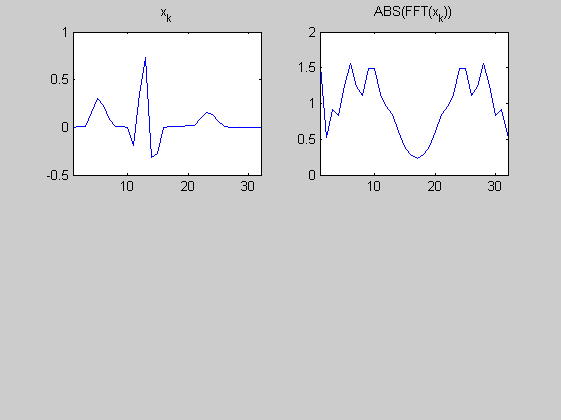

Contents
% Interpolation %============== % Interpolieren Sie ein Testsignal auf die vierfache Länge durch % Einfügen von Nullen im Frequenzbereich. % (c) HSM, B. Wir 8.8.2012 clear aöö; close all;
(i) Testsignal und DFT
x_k = ecg(128); x_k = x_k(1:4:end); N = length(x_k) X_v = fft(x_k); figure(1); subplot(2,2,1); plot(x_k); title('x_k'); xlim([1,N]); subplot(2,2,2); plot(abs(X_v)); title('ABS(FFT(x_k))');xlim([1,N]);
N =
32
 (ii) Interpolation durch Einfügen von Nullen um Frequenzbereich;
N = length(x_k) N4 = N*4 X_v = fft(x_k); Xint_v = []; % Xint_v(1:N/2) = X_v(......); % Xint_v(N/2+1:....= ......; % Xint_v(n4-N/2+1:........); % % xint_k = fft(Xint_v); % figure(1); % subplot(2,2,3); plot(real(xint_k)); title('xint_k'); xlim([1,N4]); % subplot(2,2,4); plot(abs(fft(xint_k))); title('ABS(FFT(xint_k))');xlim([1,N4]); %
N =
32
N4 =
128